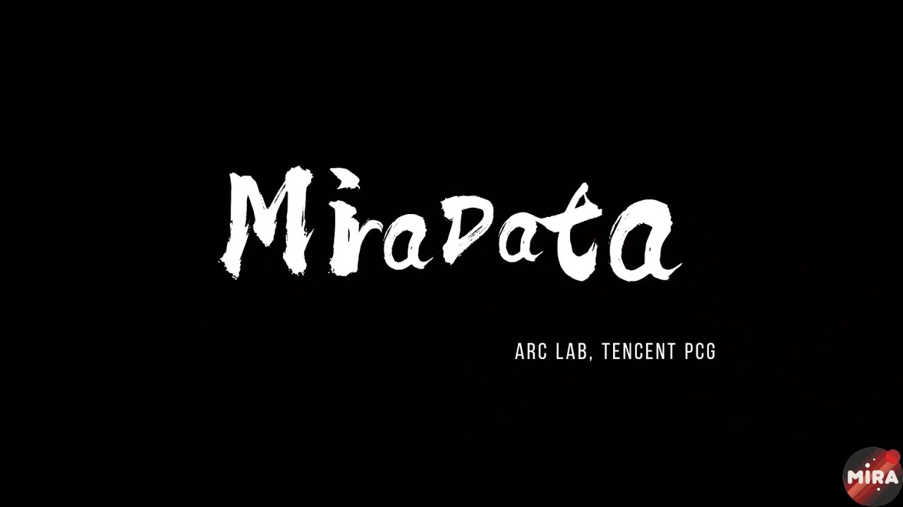
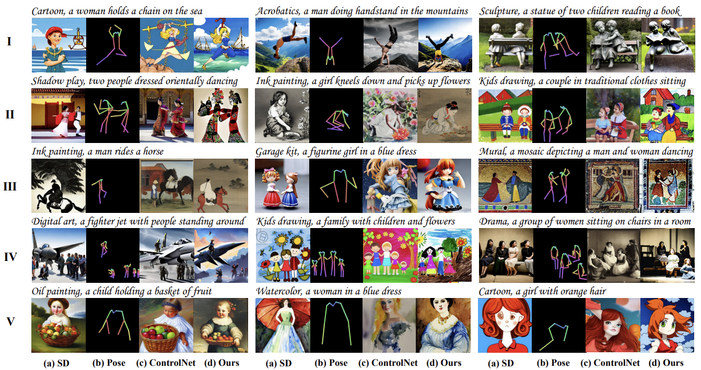
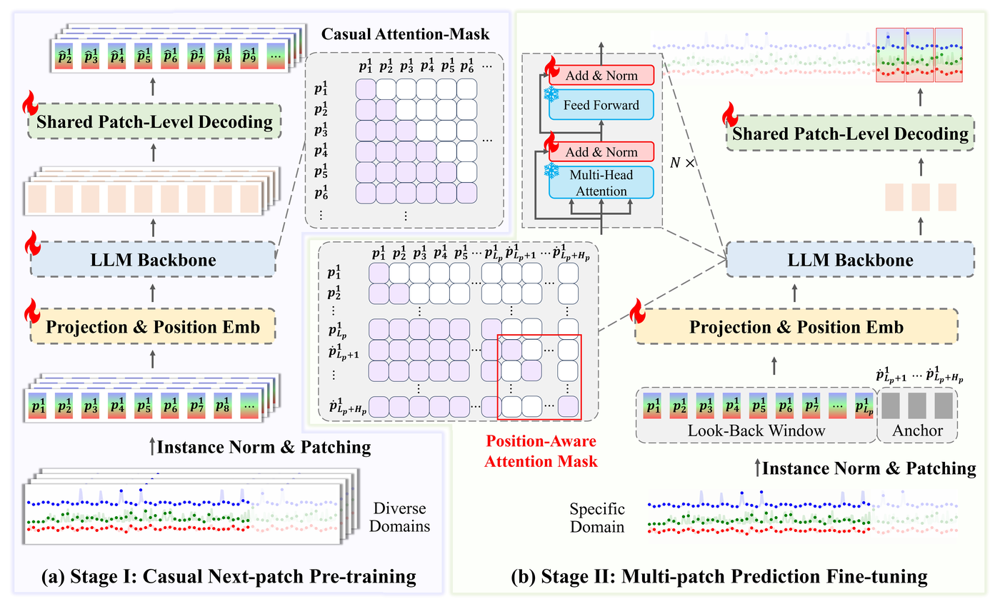
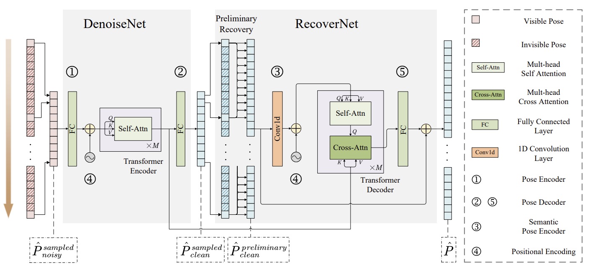

|
Ph.D. Candidate |
|
Biography
Hi, I'm Xuan Ju (鞠璇).
I am currently a second-year Ph.D. student in the CURE Lab at The Chinese University of Hong Kong guided by Pro. Qiang Xu.
Before this, I majored in Computer Science and Technology (minored in Mathematics and Applied Mathematics) and got my bachelor's degree from Tongji University.
I have a broad interest in most areas of computer vision, especially in image generation and human motion understanding.
Please do not hesitate to reach out to me via email at juxuan.27@gmail.com !
Selected Publications
* equal contribution
|  |
MiraData: A Large-Scale Video Dataset with Long Durations and Structured Captions
Under Review
|

|
BrushNet : A Plug-and-Play Image Inpainting Model with Decomposed Dual-Branch Diffusion
Under Review
|
|
Direct Inversion: Boosting Diffusion-based Editing with 3 Lines of Code
International Conference on Learning Representations (ICLR), 2024
|
|
|  |
HumanSD: A Native Skeleton-Guided Diffusion Model for Human Image Generation
IEEE/CVF International Conference on Computer Vision (ICCV), 2023 (Oral, Top 1.8%)
|
|
Human-Art: A Versatile Human-Centric Dataset Bridging Natural and Artificial Scenes
Proceedings of the IEEE/CVF Conference on Computer Vision and Pattern Recognition (CVPR), 2023
|
|
|  |
Multi-Patch Prediction: Adapting LLMs for Time Series Representation Learning
International Conference on Machine Learning (ICML), 2024
|
|  |
Deciwatch: A simple baseline for 10x efficient 2d and 3d pose estimation
European Conference on Computer Vision (ECCV), 2022
|
|
Smoothnet: A plug-and-play network for refining human poses in videos
European Conference on Computer Vision (ECCV), 2022
|


Experiences

|
Research Intern, Meta GenAI
Topic: Video Generation
Supervised by: Kevin Chih-Yao Ma
|
|
Research Intern, Tencent ARC Laboratory
Topic: Image Inpainting, Video Generation
Supervised by: Xintao Wang, Ying Shan
|
|
|
Research Intern, International Digital Economy Academy (IDEA) CVR Laboratory
Topic: Human-Centric Image Generation
Supervised by: Ailing Zeng, Lei Zhang
|
|

|
Research Intern, X-Lab, SenseTime Research
Topic: Human Pose Estimation
Supervised by: Lei Yang
|
Professional Services
- Conference Reviewer for ECCV(2024), IJCV(2024), CVPR (2024), ICCV (2023), NeurIPS (2023)
Selected Honors & Awards
- National Scholarship 2020, 2021
- Outstanding Graduate of Shanghai Province 2022
- Qidi Scholarship 2022
- First Prize in "Challenge Cup" National College Students Contest 2022
Teaching Experience
- CSCI 1120, Introduction to Computing Using C++ Fall 2023
- CSCI 1520, Computer Principles and C++ Programming Spring 2022
- CSCI 1540, Fundamental Computing with C++ Fall 2022